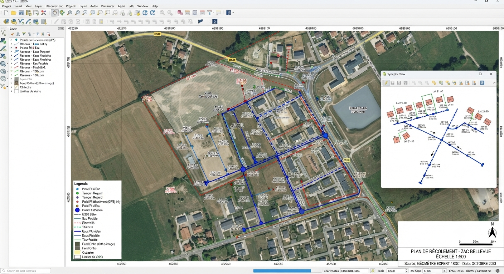
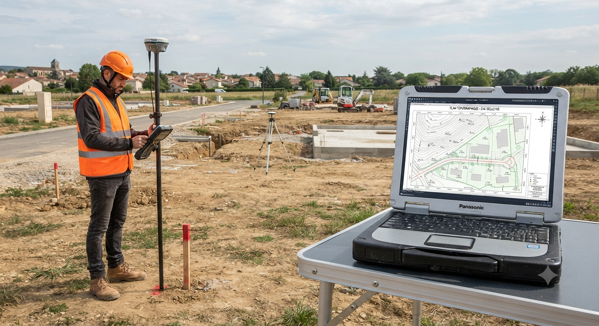

Geomark SIG Solutions accompagne collectivités et entreprises dans leurs projets de systèmes d'information géographique : analyse spatiale, topographie, détection de réseaux et cartographie web sur mesure.
Chaque profil a ses urgences juridiques, son budget et son vocabulaire. Choisissez le vôtre pour voir directement les solutions qui vous concernent.
Cimetières, adressage, DECI, urbanisme : des obligations concrètes, un budget municipal maîtrisé.
Proximité, conformité réglementaire, simplicité.
PLUi, réseaux Classe A, PCRS, énergie : la donnée pensée à l'échelle du territoire.
Ingénierie de la donnée, centralisation et mutualisation intercommunale.
État, Département, Région, SDIS : cohérence et fiabilité des données territoriales.
Un partenaire technique pour les données que vous pilotez ou contrôlez.
Terrain, plaidoyer, reporting bailleurs : la carte qui priorise l'action et prouve l'impact.
Une solution adaptée au budget et au fonctionnement associatif.
TP, bureaux d'études, promoteurs : réactivité, précision topographique, rentabilité.
Des traitements géographiques pensés pour la rentabilité de vos projets.
De la donnée brute à la carte finale, chaque prestation est pensée comme un service technique complet, pas seulement une livraison de fichiers.

Analyse spatiale, géomarketing, géotraitements automatisés et architecture de bases de données géolocalisées.
En savoir plus →
Levés GPS RTK haute précision et intégration SIG.
En savoir plus →Détection et cartographie réglementaire des réseaux enterrés et aériens (eau, fibre, chaleur, gaz, électricité).
En savoir plus →Portails cartographiques, applications Leaflet sur mesure et serveurs WMS/WFS déployés dans le cloud.
En savoir plus →Fondée par Robin Maume, géomaticien avec plus de 10 ans d'expérience, Geomark SIG Solutions est basée à La Réunion et intervient sur l'île, à Mayotte et à distance en métropole.
De la collectivité territoriale à l'entreprise privée, chaque mission est traitée avec la même exigence technique : comprendre le besoin métier avant de choisir l'outil.
Qui sommes-nous ?Discutons-en ensemble, réponse sous 48h.